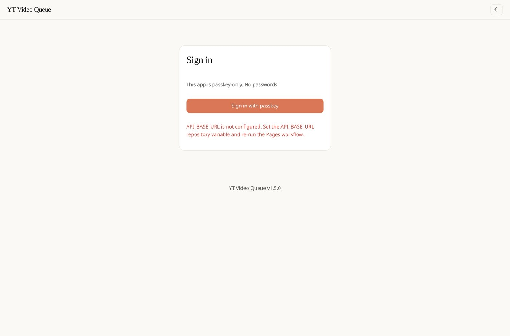
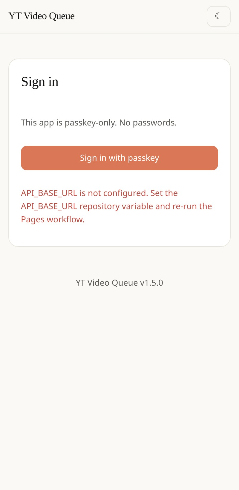

What it is
YT Video Queue is a personal watch queue for YouTube, Telegram and any other web video link. You add links into ordered series, watch them one by one, and the next video is queued automatically when one finishes. Progress is saved, so you resume anywhere.
Login is passkey-only (WebAuthn) — no passwords — and by default only your passkey opens it.

Why I built it
Watch-later lists are where links go to die. Playlists assume every link is a YouTube video, and they forget everything the moment you switch devices. I wanted a queue that treats a YouTube lecture, a Telegram post and any other video link as equals — ordered, resumable, and reachable from my phone and laptop without a password.
What it does
- Any source: YouTube links play in the built-in player, Telegram posts embed, and anything else opens in a new tab. Titles and thumbnails are read from the page automatically, and guessed ones are tagged auto so you can rename them.
- Series with their own URLs: every series has a shareable link (
#/s/…), and the browser back button just works. - PowerRename: multi-select and rename with search/replace, regex, capture references, counters and date tokens, with a live preview table and one-click undo.
- Export: open a series as a temporary YouTube playlist, or download it as
.txt,.csvor.json. - View modes: thumbnail grid, compact rows or a plain list, in light or dark.

Under the hood
GitHub Pages cannot keep secrets or verify WebAuthn signatures, so the app is split into three small pieces:
- Static UI on GitHub Pages —
index.html,app.js,player.jsand a vendored WebAuthn helper (no CDN). - A tiny API on Cloudflare Workers that holds the Turso token and verifies passkeys. The browser only ever sees a short-lived session token.
- Data in Turso (libSQL).
Try it
It is a personal tool, currently at v1.5.0. Add your Worker URL, deploy the Pages frontend, and register a passkey.